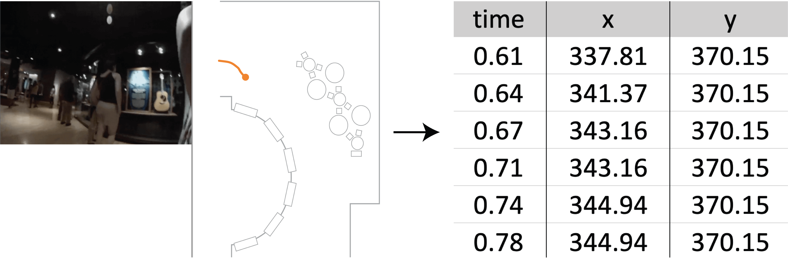

Figure 1. The left image is a screenshot from the Mondrian Transcription tool. It shows how one can load video and floor plan images to trace the movement of people and things. Here, the movement of Adhir as he enters a museum gallery space is being traced. The right image shows an excerpt of the structured text file format that can be saved after completing a movement trace. Here, the text file is an excerpt from the beginning of Adhir’s completed movement trace.
